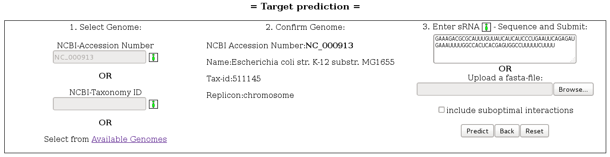

|
 |
 |
 |
 |
| History: Version 1.33 online | ||||
|
|
|
|
|
| History: Version 1.33 online | ||||
Introduction
The RNApredator software facilitates the prediction of sRNA-mRNA interactions in bacteria. Currently targets can be searched in more than 1300 bacterial species. RNApredator uses a dynamic programming approach to compute putative targets. The main machinery used by RNApredator to find targets is the program called RNAplex (Version 1.8.4). Post-processing steps allow to look at accessibility differences on the target mRNA before and after the binding of the sRNAs. It is further possible to make a Gene Ontology(GO) and pathways (KEGG) term enrichment analysis on a set of selected targets.
Input
The webserver takes as input a genome/plasmid from a set of 2155 sequences. This can either be entered through the corresponding NCBI-Accession Number or the NCBI-Taxonomy ID (Illustration 1). The desired genome can also be searched in a tree containing all available genomes and grouped into phylum/class/order/family/genus/species (Illustration 2). Once the desired genome has been selected, a sRNA sequence should be entered, without line breaks and without header. The target search is launched after the predict button has been pressed.
Enabling the "include suboptimal interactions" checkbox adds suboptimal results to the result list.
An alternative way to enter the genome of interest is to choose it from a tree containing all available genomes and grouped into phylum/class/order/family/genus/species.
Processing
The results are calculated as follows:
RNAplex is called with the parameter interaction length set to 30 and precomputed accessibilities produced with RNAplfold (Version 1.8.4)
for the mRNAs and RNAup (Version 1.8.4) for the sRNAs.
If suboptimal interactions were requested additionally an energy-threshold of -8 and a duplex distance of 20 is used running RNAplex.
The RNAplex man page gives a detailed explanation of these parameters.
RNAplfold calculation of the mRNA accessiblities was performed with window-size (-W) set to 240, span (-L) to 160, length of the unstructured region to 30, requesting opening energies (-O) (see RNAplfold man-page for details). RNAup computation of sRNA accessibility is called with the parameter for length of the unstructured region (-u) set to 40 or the sequence lenght if shorter (see RNAup man-page for details).
Output
The webserver outputs a list of
sRNA-mRNA interactions (including suboptimal interactions if enabled in input), which
is sorted based on the energy of
interaction returned by the
dynamic programming approach. It is
possible to sort the results
based on the energy/position/name of
target/Z-score/Genomic
coordinate/Accession. Further the output can
be filtered based on the
position of the targets relative to the
start codon. Finally it is also
possible to select only the
25/50/75/100 best interactions. It should
be noted that all the
results can be downloaded in tabular format.
You can view a example result table of the sample input
here (E.coli str. K12 substr. MG1655 - MicA sRNA ).
It is also possible to select a set of interations of interest and post-process them. The post-processing step will return a list of significantly enriched GO/KEGG terms as well as the variation in accessibility around the ribosomal target site before and after the binding of the sRNA.
Due to the large amount of output data, job results are only kept for 60 days after computation!